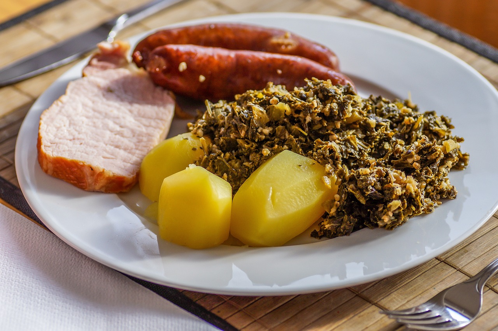

Grünkohl
Zutaten für
Schmalz in einem großen Kochtopf flüssig werden lassen und die fein
gehackte Zwiebel darin andünsten. Dann den Grünkohl darauf geben und so
viel Brühe angießen, dass der Kohl im Topf gerade bedeckt ist. Den Kohl
mindestens 60 Minuten köcheln lassen. Ab und an umrühren, evtl. etwas
Wasser nachgießen.
Dann den Speck und das Kasseler zufügen. Zwei EL Senf unterrühren, den
Kohl weitere 30 Min. schmoren lassen. Man kann die Kochwürste und Pinkel
auf dem Kohl garen lassen, sie brauchen ca. 15 Minuten. Ich koche sie
jedoch extra und kippe die Kochflüssigkeit weg, da diese sehr fett ist.
Das ist jedoch Ansichtssache. Grünkohl mit Salz, Pfeffer und einer Prise
Zucker abschmecken. Die Hafergrütze bzw. Haferflocken unterrühren und
abschließend 15 Minuten bei geringer Hitze quellen lassen.
Dazu passen Salzkartoffeln.
Anmerkung: Vielen Oldenburgern schmecken auch Bratkartoffeln dazu.